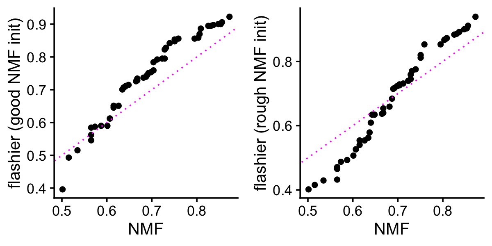

Last updated: 2024-07-03
Checks: 7 0
Knit directory: ebnmf-paper/
This reproducible R Markdown analysis was created with workflowr (version 1.7.1). The Checks tab describes the reproducibility checks that were applied when the results were created. The Past versions tab lists the development history.
Great! Since the R Markdown file has been committed to the Git repository, you know the exact version of the code that produced these results.
Great job! The global environment was empty. Objects defined in the global environment can affect the analysis in your R Markdown file in unknown ways. For reproduciblity it’s best to always run the code in an empty environment.
The command set.seed(20231214) was run prior to running
the code in the R Markdown file. Setting a seed ensures that any results
that rely on randomness, e.g. subsampling or permutations, are
reproducible.
Great job! Recording the operating system, R version, and package versions is critical for reproducibility.
Nice! There were no cached chunks for this analysis, so you can be confident that you successfully produced the results during this run.
Great job! Using relative paths to the files within your workflowr project makes it easier to run your code on other machines.
Great! You are using Git for version control. Tracking code development and connecting the code version to the results is critical for reproducibility.
The results in this page were generated with repository version e0a8f31. See the Past versions tab to see a history of the changes made to the R Markdown and HTML files.
Note that you need to be careful to ensure that all relevant files for
the analysis have been committed to Git prior to generating the results
(you can use wflow_publish or
wflow_git_commit). workflowr only checks the R Markdown
file, but you know if there are other scripts or data files that it
depends on. Below is the status of the Git repository when the results
were generated:
Ignored files:
Ignored: .DS_Store
Ignored: analysis/.DS_Store
Untracked files:
Untracked: flash_greedy_init_noisy_F.txt
Untracked: flash_greedy_init_noisy_L.txt
Untracked: noisy_swimmer.mat
Untracked: noisy_swimmer_more.pdf
Untracked: scripts/svm.test.normgrey.gz
Untracked: scripts/svm.train.normgrey.gz
Note that any generated files, e.g. HTML, png, CSS, etc., are not included in this status report because it is ok for generated content to have uncommitted changes.
These are the previous versions of the repository in which changes were
made to the R Markdown (analysis/sparse_faces.Rmd) and HTML
(docs/sparse_faces.html) files. If you’ve configured a
remote Git repository (see ?wflow_git_remote), click on the
hyperlinks in the table below to view the files as they were in that
past version.
| File | Version | Author | Date | Message |
|---|---|---|---|---|
| Rmd | e0a8f31 | Peter Carbonetto | 2024-07-03 | workflowr::wflow_publish("analysis/sparse_faces.Rmd", verbose = TRUE) |
| html | 3de01c6 | Peter Carbonetto | 2024-07-03 | Added another faces plot to the sparse_faces analysis. |
| Rmd | 7f8b1ec | Peter Carbonetto | 2024-07-03 | workflowr::wflow_publish("analysis/sparse_faces.Rmd", verbose = TRUE) |
| html | b3f8b0e | Peter Carbonetto | 2024-07-03 | Build site. |
| Rmd | f95a3d1 | Peter Carbonetto | 2024-07-03 | workflowr::wflow_publish("analysis/sparse_faces.Rmd", verbose = TRUE) |
| html | 459e8e3 | Peter Carbonetto | 2024-07-03 | I have a first draft of the sparse_faces workflowr analysis. |
| Rmd | c0daa94 | Peter Carbonetto | 2024-07-03 | workflowr::wflow_publish("analysis/sparse_faces.Rmd", verbose = TRUE, |
| Rmd | 7fb737e | Peter Carbonetto | 2024-07-03 | Made a few improvements to the sparse_faces.R draft script. |
We will use the classic CBCL faces data set to illustrate how NMF with adaptive sparsity produces different decompositions by parts than standard NMF.
First, load the packages and some custom functions needed for the analyses below.
library(dplyr)
library(tidyr)
library(ggplot2)
library(cowplot)
library(NNLM)
library(flashier)
source("code/faces_functions.R")Load the faces data, which were downloaded from here.
load("data/faces.RData")
faces <- 1 - faces_trainInitialize the sequence of pseudorandom numbers.
set.seed(1)It is interesting that the pixel values in the faces data are very evenly distributed between 0 and 1.
par(mar = c(5,4,2,2))
hist(faces,n = 64,main = "")
| Version | Author | Date |
|---|---|---|
| 459e8e3 | Peter Carbonetto | 2024-07-03 |
Plot a sampling of the faces.
n <- nrow(faces)
m <- ncol(faces)
i <- sample(n,49)
plot_faces(faces[,i])
| Version | Author | Date |
|---|---|---|
| 459e8e3 | Peter Carbonetto | 2024-07-03 |
Let’s begin with the standard NMF method. Lee & Seung (2001) used k = 49.
set.seed(1)
k <- 49
nmf <- nnmf(faces,k = k,method = "scd",max.iter = 200,rel.tol = 1e-8,
n.threads = 4,verbose = 0)Next let’s use flashier (with point-expoential priors) to refine the NMF estimates.
fl_nmf <- flash_init(faces,var_type = 0)
fl_nmf <- flash_factors_init(fl_nmf,
list(nmf$W,t(nmf$H)),
ebnm_point_exponential)
fl_nmf <- flash_backfit(fl_nmf,maxiter = 100,extrapolate = FALSE,verbose = 0)
fl_nmf <- flash_backfit(fl_nmf,maxiter = 100,extrapolate = TRUE,verbose = 0)Run flashier again, but this time with more wiggle room by only running a few updates of the NMF algorithm.
set.seed(1)
nmf0 <- nnmf(faces,k = k,method = "scd",max.iter = 20,verbose = 0)
fl <- flash_init(faces,var_type = 0)
fl <- flash_factors_init(fl,list(nmf0$W,t(nmf0$H)),ebnm_point_exponential)
fl <- flash_backfit(fl,maxiter = 100,extrapolate = FALSE,verbose = 0)
fl <- flash_backfit(fl,maxiter = 100,extrapolate = TRUE,verbose = 0)The first run of flashier didn’t change the NMF estimates that much:
W <- normalize.cols(nmf$W)
L_flnmf <- ldf(fl_nmf,type = "i")$L
L_fl <- ldf(fl,type = "i")$L
cor(as.vector(W),as.vector(L_flnmf))
cor(as.vector(W),as.vector(L_fl))
# [1] 0.9767108
# [1] 0.7186576So let’s focus our attention on the “parts” learned by the two different flashier matrix factorizations. These are the parts learned by the first flashier run (theo ne with a good NMF initialization):
zero <- 0.001
k_set <- order(colSums(W > zero))
plot_faces(L_flnmf[,k_set],title = "flashier with good NMF init")
| Version | Author | Date |
|---|---|---|
| 459e8e3 | Peter Carbonetto | 2024-07-03 |
And these are the parts learned by the second flashier run (the one with a rough NMF initialization):
plot_faces(L_fl[,k_set],title = "flashier with rough NMF init")
| Version | Author | Date |
|---|---|---|
| 459e8e3 | Peter Carbonetto | 2024-07-03 |
For a better comparison, let’s plot the parts again next to each other. In this figure, the second flashier run is in every second row from the top:
L_combined <- cbind(L_flnmf[,k_set],L_fl[,k_set],0)
L_combined <-
L_combined[,c(1:10,50:59,11:20,60:69,21:30,70:79,31:40,80:89,41:49,99,90:99)]
plot_faces(L_combined,nrow = 10,ncol = 10)
| Version | Author | Date |
|---|---|---|
| 3de01c6 | Peter Carbonetto | 2024-07-03 |
Because the second run of flashier had more room to adapt its priors, it learned considerably different parts than the NMF-like flashier solution. This is reflected in the greater variation in the sparsity of the parts—it learned that many parts are very sparse, while another good fraction of the faces are less sparse. To show this, we plot the sparsity—more precisely,the proportion of pixels that are zero—for each of the factors, then order the factors by the sparsity:
pdat <-
data.frame(
nmf = sort(colMeans(normalize.cols(W) < zero)),
flashier1 = sort(colMeans(normalize.cols(L_flnmf) < zero)),
flashier2 = sort(colMeans(normalize.cols(L_fl) < zero)))
p1 <- ggplot(pdat,aes(x = nmf,y = flashier1)) +
geom_point() +
geom_abline(intercept = 0,slope = 1,color = "magenta",lty = "dotted") +
labs(x = "NMF",y = "flashier (good NMF init)") +
theme_cowplot(font_size = 12)
p2 <- ggplot(pdat,aes(x = nmf,y = flashier2)) +
geom_point() +
geom_abline(intercept = 0,slope = 1,color = "magenta",lty = "dotted") +
labs(x = "NMF",y = "flashier (rough NMF init)") +
theme_cowplot(font_size = 12)
plot_grid(p1,p2)
This illustrates that NMF with adaptive sparsity produces different decompositions by parts than regular NMF.
sessionInfo()
# R version 4.3.3 (2024-02-29)
# Platform: aarch64-apple-darwin20 (64-bit)
# Running under: macOS Sonoma 14.5
#
# Matrix products: default
# BLAS: /Library/Frameworks/R.framework/Versions/4.3-arm64/Resources/lib/libRblas.0.dylib
# LAPACK: /Library/Frameworks/R.framework/Versions/4.3-arm64/Resources/lib/libRlapack.dylib; LAPACK version 3.11.0
#
# locale:
# [1] en_US.UTF-8/en_US.UTF-8/en_US.UTF-8/C/en_US.UTF-8/en_US.UTF-8
#
# time zone: America/Chicago
# tzcode source: internal
#
# attached base packages:
# [1] stats graphics grDevices utils datasets methods base
#
# other attached packages:
# [1] flashier_1.0.53 ebnm_1.1-34 NNLM_0.4.4 cowplot_1.1.3
# [5] ggplot2_3.5.0 tidyr_1.3.1 dplyr_1.1.4 workflowr_1.7.1
#
# loaded via a namespace (and not attached):
# [1] tidyselect_1.2.1 viridisLite_0.4.2 farver_2.1.1
# [4] fastmap_1.1.1 lazyeval_0.2.2 promises_1.2.1
# [7] digest_0.6.34 lifecycle_1.0.4 processx_3.8.3
# [10] invgamma_1.1 magrittr_2.0.3 compiler_4.3.3
# [13] rlang_1.1.3 sass_0.4.8 progress_1.2.3
# [16] tools_4.3.3 utf8_1.2.4 yaml_2.3.8
# [19] data.table_1.15.2 knitr_1.45 labeling_0.4.3
# [22] prettyunits_1.2.0 htmlwidgets_1.6.4 scatterplot3d_0.3-44
# [25] RColorBrewer_1.1-3 Rtsne_0.17 withr_3.0.0
# [28] purrr_1.0.2 grid_4.3.3 fansi_1.0.6
# [31] git2r_0.33.0 fastTopics_0.6-184 colorspace_2.1-0
# [34] scales_1.3.0 gtools_3.9.5 cli_3.6.2
# [37] rmarkdown_2.26 crayon_1.5.2 generics_0.1.3
# [40] RcppParallel_5.1.7 rstudioapi_0.15.0 httr_1.4.7
# [43] pbapply_1.7-2 cachem_1.0.8 stringr_1.5.1
# [46] splines_4.3.3 parallel_4.3.3 softImpute_1.4-1
# [49] vctrs_0.6.5 Matrix_1.6-5 jsonlite_1.8.8
# [52] callr_3.7.5 hms_1.1.3 mixsqp_0.3-54
# [55] ggrepel_0.9.5 irlba_2.3.5.1 horseshoe_0.2.0
# [58] trust_0.1-8 plotly_4.10.4 jquerylib_0.1.4
# [61] glue_1.7.0 ps_1.7.6 uwot_0.1.16
# [64] stringi_1.8.3 Polychrome_1.5.1 gtable_0.3.4
# [67] later_1.3.2 quadprog_1.5-8 munsell_0.5.0
# [70] tibble_3.2.1 pillar_1.9.0 htmltools_0.5.7
# [73] truncnorm_1.0-9 R6_2.5.1 rprojroot_2.0.4
# [76] evaluate_0.23 lattice_0.22-5 highr_0.10
# [79] RhpcBLASctl_0.23-42 SQUAREM_2021.1 ashr_2.2-66
# [82] httpuv_1.6.14 bslib_0.6.1 Rcpp_1.0.12
# [85] deconvolveR_1.2-1 whisker_0.4.1 xfun_0.42
# [88] fs_1.6.3 getPass_0.2-4 pkgconfig_2.0.3